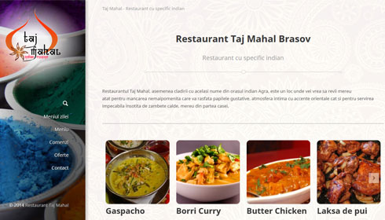

<md-dialog aria-label="Taj Mahal - Indian Restaurant in Brasov, Romania">
  <form>
    <md-toolbar>
      <div class="md-toolbar-tools">
        <h2>Taj Mahal - Indian Restaurant in Brasov, Romania</h2>
        <span flex></span>
        <md-button class="md-icon-button" ng-click="hide()">
          <md-icon md-svg-src="images/icons/ic_close_24px.svg" aria-label="Close dialog"></md-icon>
        </md-button>
      </div>
    </md-toolbar>
    <md-dialog-content>
      <div>
        <p>
          The client needed a solution for their web presence consisting on: describing their services, showcase-ing
          their products and dishes but also their special offers.
        </p>
        

        <p>
          Also, the visitors should be a able to take orders online.
        </p>

        <p>
          The design style of the website was supposed to inspire the Indian atmosphere and cuisine.
        </p>

        <p class="status">
          Status: <span class="offline">offline</span>
        </p>

        <p>
          Visit: <a href="http://www.tajmahalrestaurant.ro" target="_blank">Taj Mahal Restaurant</a>
        </p>
      </div>
    </md-dialog-content>

  </form>
</md-dialog>
